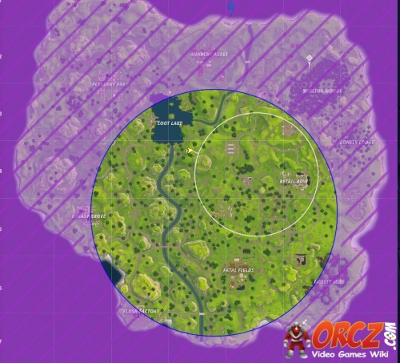

Storm Chasing
The idea of storm chasing is not hard to grasp, unless you are a beginner in which case you should see the noob page. The goal of "stormchasing" is to stay just outside the ring of the storm, running with the storm as it closes into the eye. If executed correctly, there will be no chance of anyone coming up from behind you, this way you only run up behind others. With an intermediate level of skill, you should be able to catch a W without problem.
